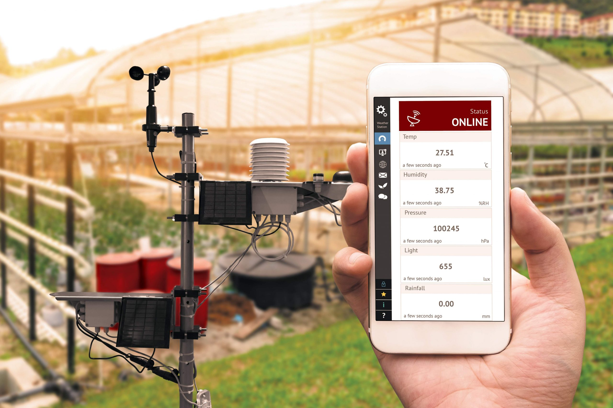

IoT Advantages | ||||
|---|---|---|---|---|
|
1. Real-time monitoring of all the devices that have connected to the Internet can real-time detect the issue of the devices and prevent downtime. 2. To reduce cost, IOT devices can optimize the usage of resources, and simplify the process, saving up many fees, such as human efforts and Time. 3. IoT devices support remote control. It can reduce face-to-face maintenance and support. 4. IoT can improve the quality of life through home and transport automation, increasing convenience in our daily life. 5. IoT can bring us some environmental benefits. One of the functions of IoT, Production automation can reduce waste and conserve resources, which brings us environmental benefits. |
||||
|  | ||||